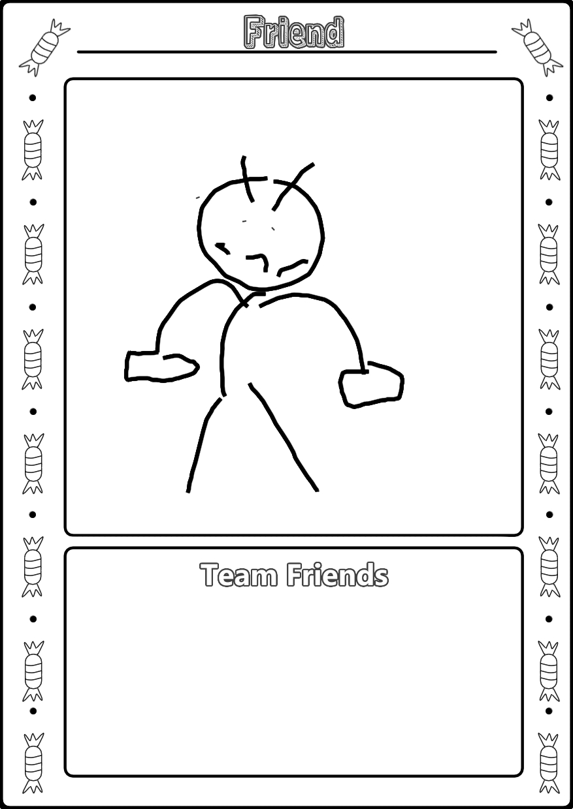
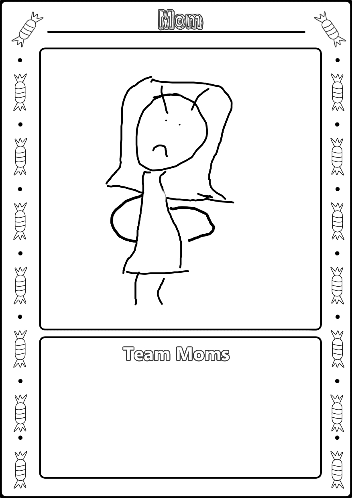
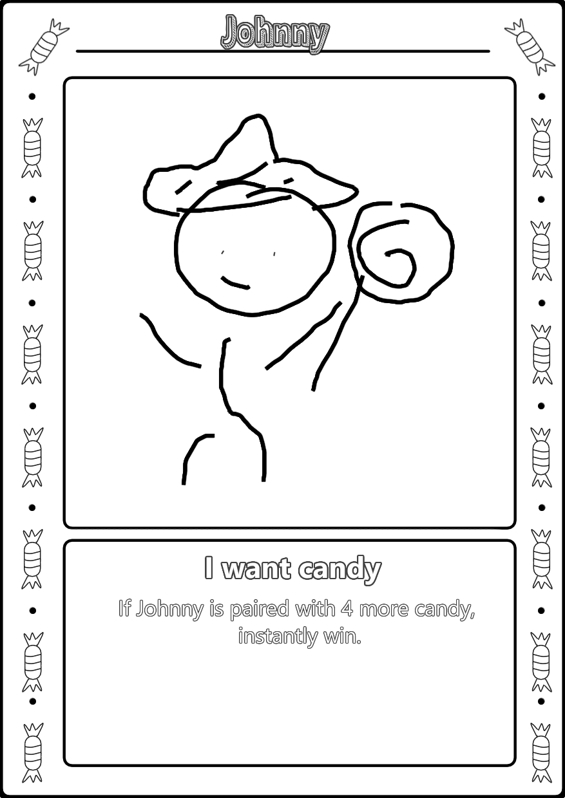

As Johnny was walking down the street he saw a mom with a kid. The kid was holding a big lollypop. He seemed kind of upset as it didn't seem like the type he wanted. His mom, next to him, seemed to try and talk him out of it. Johnny thought a little bit, and a bright idea came up into his head: Johnny would just satisfy his sweet tooth while also solving the mom's problem.
And so, he took it. The kid didn't seem displeased, even kind of thankful that it got rid of the unwanted lollypop. As he looked up though, he saw the mother was making a phone call. In a couple of seconds, he saw a couple of other moms coming in the distance. They all seemed kind of upset. Johnny had, fortunately, gone out with his friends, which were finally catching up to him.
It would seem to be an eventful afternoon.
Team Friends
Johnny's friends are here to save the day! Play as one of his friends to try to save Johnny from the claws of angry moms! Angry friends can be a force to be reckoned with, capable of unleashing a torrent of emotions that can leave even the most confident individuals feeling uneasy. Their usually warm and supportive presence can suddenly shift into a whirlwind of frustration and intensity, making it clear that they will not be ignored or dismissed. The sharp words, the piercing stare, or the sudden silence can be daunting, but they also serve as a reminder of the depth of their feelings and the strength of their convictions. Despite the fear or discomfort they may inspire, angry friends are often fighting for something they believe in deeply—whether it's justice, loyalty, or simply being heard. Their anger can be a powerful catalyst for change and growth, pushing those around them to confront their own actions and emotions. In the end, the intensity of an angry friend can be a testament to the sincerity and passion that underlies their relationships.


Team Moms
Be an angry Mom and get the candy back! Angry moms can be a formidable force, striking fear into the hearts of those around them. Their usually nurturing and caring demeanor can suddenly transform into a fierce storm of emotions, leaving a trail of wide-eyed children and cautious family members in their wake. The sound of a slammed door, the flash of a stern glance, or the sharp tone of a raised voice can send shivers down the spines of even the bravest souls. Yet, beneath this intimidating exterior lies a complex mix of frustration, exhaustion, and love, often stemming from the immense pressure and responsibility that comes with parenting. Despite the fear they may inspire, angry moms are also a testament to the depth of their emotions and the strength of their convictions, reminding us that even the most loving and caring individuals can have a powerful and intense side.
About us
At Johnny LTD., we are passionate about crafting engaging and immersive experiences through the art of card games. Our journey began with a shared love for strategy, creativity, and community building. Our team is comprised of game enthusiasts, designers, and innovators who are dedicated to creating unique and captivating card games that bring people together.

.png) Home
w
Groups
Get a Copy
Home
w
Groups
Get a Copy